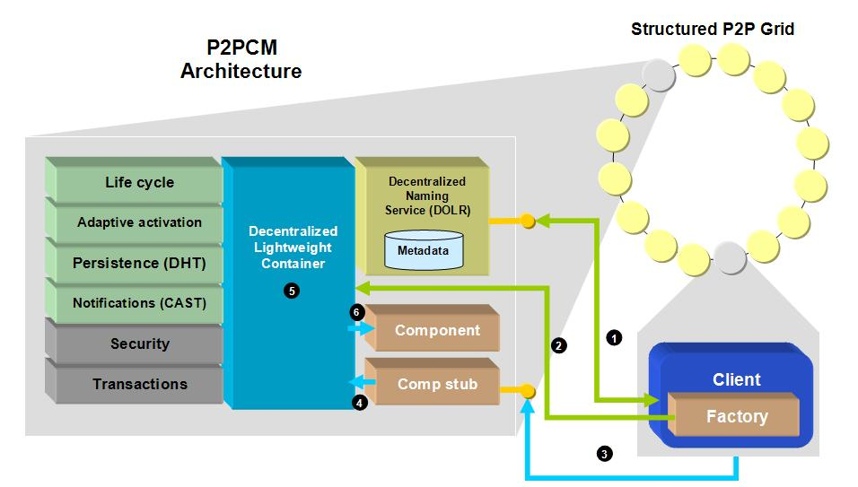

|
|
May
10, 2005.
p2pCM Next Releases
p2pCM has
been included in
DERMI
distribution.
A component is defined as a
unit of software application composition with contractually
specified interfaces and explicit context dependencies that can be
developed, acquired, added to the system and composed of other
independent components, in time and space. Component interfaces
determine the operations that a component implements, and the
operations it uses from other components during its execution.
A distributed component-oriented
model is an architecture for defining components and their
interactions. It must provide a packaging technology for deploying
binary component executables. Moreover, it needs a container
framework for injecting life cycle, thus permitting activation and
passivation of component instances. Other services include security,
transactions, persistence, events, and others.
We have designed a new
decentralized P2P grid component model which runs on top of an
overlay network. We have implemented the majority of traditional
component models services, but adapted them to the underlying
topology. These include:
-
A decentralized component
location and deployment facility.
- A decentralized lightweight container model which provides
components with the following services:
· Component life cycle service
· Component persistence
· Adaptive component activation

The container is responsible for
managing components life cycle, and notifying them about life cycle
events such as activation, passivation, or transaction progress. Any
component provides event interfaces that the container automatically
invokes when particular events occur. Moreover, it provides
components uniform access to services such as persistence, security,
transactions, and many others. In traditional client-server based
component models, the container itself is usually based on a web
application server, database server, operating system, etc. These
kinds of containers are rather monolithic and consume large amounts
of resources thus requiring powerful machines to run on. This
philosophy remains in stark contrast with that of P2P, where
machines are usually treated as equals, and applications run on them
must adapt for each nodes own capacity and limitations. For our component model we have
taken into account these considerations, and opted for designing a
decentralized lightweight container model. In our case, all
of the nodes that belong to the network are containers, and as such,
they can house many components. The idea is that any component can
be run in any node (except for any restriction), because each node
runs a lightweight container.
Our containers are fault resilient and autonomous: components are
replicated all along the network. If a container fails, surely other
containers housing those components will exist in the network.
Carles Pairot Gavaldà, PhD student in the Department of
Computer Science and Mathematics at Universitat Rovira i Virgili in
Tarragona, Catalonia, Spain. Contact
<carles.pairot@urv.net>
Ruben Mondejar Andreu, PhD student in the Department of
Computer Science and Mathematics at Universitat Rovira i Virgili in
Tarragona, Catalonia, Spain. Contact
<ruben.mondejar@urv.net>
Pedro
García López, full-time professor in the Department of
Computer Science and Mathematics at Universitat Rovira i Virgili in
Tarragona, Catalonia, Spain. Contact
<pedro.garcia@urv.net>
2005
-
Carles Pairot, Pedro García,
Rubén Mondéjar, and Antonio F. Gómez Skarmeta. Building Wide-Area
Collaborative Applications on top of Structured Peer-to-Peer
Overlays. Accepted for publication on Proceedings of 14th
IEEE International Workshops on Enabling Technologies:
Infrastructures for Collaborative Enterprises (WETICE-2005).
Linkoping, Sweden, June 2005.
-
Carles
Pairot, Pedro García, Rubén Mondéjar, and Antonio F. Gómez
Skarmeta. p2pCM: A Structured Peer-to-Peer Grid Component
Model. Accepted for publication on Proceedings of the 5th
International Conference on Computational Science. 2nd
International Workshop on Active and Programmable Grid
Architectures and Components. Atlanta, USA, May 2005.
|